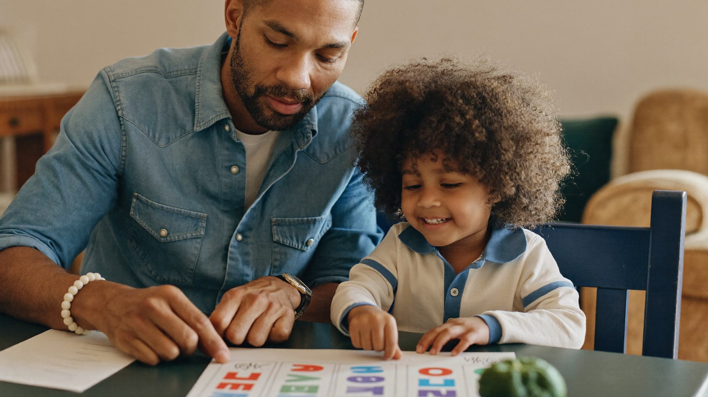

What Are Sight Words and Which Ones Should My Child Learn First?
By Leslie Dykstra · Certified Early Childhood Specialist · Williamson County, TN

If your child's teacher sent home a list of words on index cards, or if you've heard the term "sight words for kindergarten" and weren't sure what it meant, you are in good company. As a certified early childhood specialist, I answer this question all the time. Sight words are simply the words that appear so often in children's books that it's easier to recognize them on sight than to decode them phonetically every time. Knowing even a handful of them lets a beginning reader spend their mental energy on the harder, less familiar words.
What makes a word a sight word?
Two things make a word land on a sight word list:
- It appears constantly in text. Words like "the," "is," and "you" show up in almost every sentence a young child encounters.
- It may not follow typical phonics rules. "Said," for example, doesn't sound the way it looks. Children can struggle to decode it phonetically but can read it fluently once they know it by heart.
That combination — high frequency plus sometimes tricky spelling — is why these words get their own focused practice.
What is the Dolch pre-primer list?
The Dolch list is one of the most widely used sight word systems. It was developed by educator Edward William Dolch in 1948 and is still in use today because it reflects which words genuinely appear most in early reading materials.
The pre-primer level is the starting point — 40 words appropriate for children just beginning to read. Here they are:
a, and, away, big, blue, can, come, down, find, for, funny, go, help, here, I, in, is, it, jump, little, look, make, me, my, not, one, play, red, run, said, see, the, three, to, two, up, we, where, yellow, you
Don't try to teach all 40 at once. Work through them in small groups of 4–5 words at a time, and don't move on until the current group feels solid.
How do I teach sight words at home?
Repetition is the core of sight word learning, but repetition doesn't have to be boring. Here are approaches that actually work for young children:
1. Flashcards with energy Classic for a reason. Hold up a card, say the word together, then flip it over and say it again. Keep sessions short — 5 minutes is plenty for a 4 or 5 year old.
2. Write it, say it Have your child write the word on paper or a small whiteboard as they say it aloud. The combination of saying, seeing, and writing builds strong memory.
3. Hunt for it in books Choose a word and look for it together on a page of a familiar book. "Can you find the word the on this page? How many times?" This connects the card to real reading.
4. Trace it in something tactile Sand, salt in a shallow tray, shaving cream on a tray — children who trace words in a sensory material tend to remember them well. It makes the practice feel like play.
5. Rainbow writing Write the word in one color, then trace over it in two more. Children who think in color often love this, and the layering builds memory.
A few things to keep in mind:
- Practice consistency beats marathon sessions. Five minutes daily beats 30 minutes once a week.
- Celebrate small wins. Knowing five words is worth celebrating before moving to the next five.
- If your child is finding sight words genuinely frustrating, that is information. It may mean they need a stronger phonics foundation first, or that something else is worth looking at. A quick assessment can tell you where to focus.
When should my child know these words?
Most kindergarten programs expect children to be working through the Dolch pre-primer list during the year. Some programs send home reading goals that include a target number of sight words by spring.
If your child is heading into kindergarten this fall, starting with the first 10–15 Dolch pre-primer words now gives them a real head start. If they already know most of the pre-primer list, the Dolch primer list (the next level up) is a natural next step.
For more on what to expect before kindergarten, the Kindergarten Readiness Checklist walks through the full picture, and the programs page shows how Leslie works on skills like these in a structured, encouraging way.
You might also find it helpful to read about CVC words, which work alongside sight words to build early reading fluency.
Frequently asked questions
Are sight words the same as the whole word reading method?
No. Learning a defined list of high-frequency words by sight is a practical tool, not a reading philosophy. Good early reading instruction pairs sight word recognition with strong phonics. Knowing "the" on sight frees a child's attention for decoding new words they haven't seen before.
My child knows the words on cards but forgets them in books. Is that normal?
Yes, and very common. It means they've memorized the card but haven't transferred recognition to real reading. More practice reading real books — pointing at words as you read slowly together — helps bridge that gap.
Should I skip sight words and just do phonics?
Phonics is the foundation. But a handful of sight words learned early means a child can actually read simple sentences, which keeps motivation high. The two work together, not against each other.
Want support building your child's reading foundation?
Whether your child is just starting out or needs a little extra practice, Leslie can help. Book a free 15-minute conversation or explore the reading and literacy programs for ages 3–8. Little Minds, Big Futures — where every child's potential takes flight.